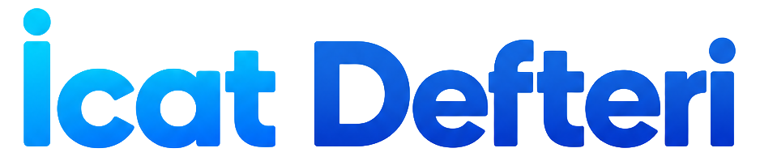

Düşün, konuş, kaydet. Fikrini kaybetme.
İcat Defteri; fikirlerinizi, projelerinizi ve günlük notlarınızı renkli başlıklar altında toplamanızı, klavyeyle veya sesle hızlıca kaydetmenizi ve hatırlatıcılarla takip etmenizi sağlayan kişisel not defteridir. Ses kaydı, bağımsız dosya ekleri, çizim tahtası, A4 PDF raporu ve isteğe bağlı kişisel Google Drive yedeklemesi gibi özellikler desteklenen uygulama sürümlerinde sunulur.
Hızlı fikir yakalamadan düzenli projelere
Yerel not, sesle yazma, gerçek M4A ses kaydı, bağımsız medya ekleri, çizim, PDF raporlama ve esnek yedekleme seçenekleriyle notlarınızı kontrol altında tutun.
Sesle Yazma ve Gerçek M4A Ses Kaydı
Canlı konuşmadan metne çevirme (dikte) özelliğinde ham ses kaydedilmez. Ses Kaydet (.m4a) kullanıldığında ses dosyaları telefonun genel Müzik klasörüne değil, yalnızca uygulamaya özel güvenli dahili alana kaydedilir.
Bağımsız Dosya Ekleri, Çizim & PDF Rapor
Eklenen fotoğraf, video ve belgeler (dosya başı azami 200 MB) uygulamanın kendi alanında bağımsız kopya olarak korunur; galeriden asıl dosyayı silseniz bile notunuzdaki kopya bozulmaz. Tam ekran vektör çizim ve A4 PDF raporu desteklenir.
Cihaz Yedeği ve İsteğe Bağlı Google Drive
Hafif metin yedeği (.json) yanında medya dahil .zip ve isteğe bağlı parolalı AES-256-GCM (.icdbak) arşivler oluşturabilirsiniz. Google Drive yedeklemesi tamamen isteğe bağlıdır; yalnızca sizin bağladığınız kendi hesabınızdaki İcat Defteri / Yedekler klasörünü kullanır.
Gizlilik Öncelikli ve Kişiselleştirilebilir
Geliştirici sunucusu, reklam veya analitik izleme yoktur. Biyometrik/PIN cihaz kilidi, tek dokunuş ana ekran widget'ı, etiketleme, genel arama, sürükle-bırak sıralama ve beş farklı tema seçeneği sunar.
Notlarınız dört adımda nasıl korunur?
Tüm içerik önce kendi cihazınızda oluşturulur ve saklanır; dışa aktarma veya kişisel Google Drive yedeklemesi yalnızca sizin açık işleminizle başlar.
Yakala
Ana ekran widget'ından veya uygulama içinden metin notu, canlı dikte ya da özel .m4a ses kaydı açın.
Düzenle
Renkli başlıklar, etiket filtreleri, genel arama, sürükle-bırak sıralama ve hatırlatıcılarla fikirlerinizi düzenleyin.
Zenginleştir
Fotoğraf, video, belge veya tam ekran çizim ekleyin; projenizi paylaşılabilir A4 PDF raporuna dönüştürün.
Yedekle
İhtiyacınıza göre cihaza metin (.json), tam arşiv (.zip / şifreli .icdbak) ya da kendi Google Drive hesabınıza yedekleyin.
Kılavuz ve bilgilendirme metinleri
Kullanım Kılavuzu, Gizlilik Politikası, KVKK Aydınlatma Metni ve Kullanıcı Sözleşmesi belgelerine doğrudan erişebilirsiniz.